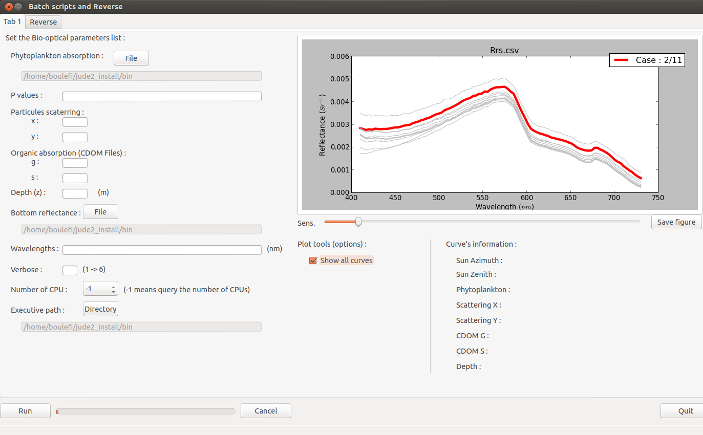

Welcome to Planarradpy’s documentation!¶
Warning
Pre-Alpha Not ready for any one to use except for testers!
Planarradpy¶
Planarradpy is a tool written in python that can execute Planarrad
Example Use [command line]¶
python planarradpy.py -i <input_parameter_file>
Example input parameters file¶
#----------------------------------------#
# Name of the batch run
#----------------------------------------#
batch_name = P_VARY_HOPE_2
#----------------------------------------#
# Bio-optical parameters list
#----------------------------------------#
saa_list = 0.0
sza_list = 130.0
p_list = 0.01,0.05,0.1,0.2
x_list = 0.01
y_list = 1.0
g_list = 0.1
s_list = 0.015
z_list = 30.0
#----------------------------------------#
# Wavelengths
# All IOPs are interpolated to these
# Wavelengths
#----------------------------------------#
wavelengths = 410.0,430.0,450.0,470.0,490.0,510.0,530.0,550.0,570.0,590.0,610.0,630.0,650.0,670.0,690.0,710.0,730.0
#----------------------------------------#
# Number of CPUs
# -1 means query the number of CPUs
#----------------------------------------#
num_cpus = 1
#----------------------------------------#
# Path of Planarrad
#----------------------------------------#
exec_path = /home/marrabld/Apps/jude2_install/bin
#----------------------------------------#
# Logging level
#----------------------------------------#
verbose = 6
#----------------------------------------#
# File paths
# Using absolute paths
#----------------------------------------#
phytoplankton_absorption_file =/home/marrabld/Projects/planarradpy/inputs/iop_files/a_phi.csv
bottom_reflectance_file = /home/marrabld/Projects/hope_test/RodFiles/Refl_BenthicMixture_1_17Bands.txt
#----------------------------------------#
# Set the parameter to report
#----------------------------------------#
report_parameter = Rrs@6.0:135.0
Source code¶
Contents:¶
-
class
libplanarradpy.planrad.BatchRun(object, batch_name='batch')[source]¶ This class is used for batch running PlanarRad for many different IOPs.
It will also distribute the work over many CPUs. It will run an single instance for PlanarRad on each available cores or the number of cores defined in the batchrun file.
Available ‘batchable’ parameters are:
Sun Azimuth Angle (deg) [saa]
Sun Zenith Angle (deg) [sza]
Phytoplankton scaling parameter [p]
particulate scattering parameters [x, y] see BioOpticalParameters
CDOM absorption parameters [g, s]
depth (m) [z]
-
batch_parameters(saa, sza, p, x, y, g, s, z)[source]¶ Takes lists for parameters and saves them as class properties
Parameters: - saa – <list> Sun Azimuth Angle (deg)
- sza – <list> Sun Zenith Angle (deg)
- p – <list> Phytoplankton linear scalling factor
- x – <list> Scattering scaling factor
- y – <list> Scattering slope factor
- g – <list> CDOM absorption scaling factor
- s – <list> CDOM absorption slope factor
- z – <list> depth (m)
-
generate_directories(overwrite=False)[source]¶ For all possible combinations of ‘batchable’ parameters. create a unique directory to story outputs
Each directory name is unique and contains the run parameters in the directory name
Parameters: overwrite – If set to True will over write all files default = False
-
-
class
libplanarradpy.planrad.BioOpticalParameters(wavelengths)[source]¶ Contains useful parameters and methods for modelling IOPs using bio-optical models
Constructor takes wavelengths. This is a common wavelength that all IOPs will be interpolated to
-
build_a()[source]¶ Calculates the total absorption from water, phytoplankton and CDOM
a = awater + acdom + aphi
-
build_a_cdom(g, s, wave_const=400)[source]¶ Builds the CDOM absorption function :: \(G \exp (-S(\lambda - 400))\)
Parameters: - g – function coefficient
- s – slope factor
- wave_const – wave constant default = 400 (nm)
Returns null:
-
build_all_iop()[source]¶ Meta method that calls all of the build methods in the correct order
self.build_a() self.build_bb() self.build_b() self.build_c()
-
build_b(scattering_fraction=0.01833)[source]¶ Calculates the total scattering from back-scattering
Parameters: scattering_fraction – the fraction of back-scattering to total scattering default = 0.01833 b = ( bb[sea water] + bb[p] ) /0.01833
-
build_bbp(x, y, wave_const=550)[source]¶ Builds the particle backscattering function \(X(\frac{550}{\lambda})^Y\)
Parameters: - x – function coefficient
- y – order of the power function
- wave_const – wave constant default 550 (nm)
Returns null:
-
build_c()[source]¶ Calculates the total attenuation from the total absorption and total scattering
c = a + b
-
read_aphi_from_file(file_name)[source]¶ Read the phytoplankton absorption file from a csv formatted file
Parameters: file_name – filename and path of the csv file
-
read_pure_water_absorption_from_file(file_name)[source]¶ Read the pure water absorption from a csv formatted file
Parameters: file_name – filename and path of the csv file
-
read_pure_water_scattering_from_file(file_name)[source]¶ Read the pure water scattering from a csv formatted file
Parameters: file_name – filename and path of the csv file
-
scale_aphi(scale_parameter)[source]¶ Scale the spectra by multiplying by linear scaling factor
Parameters: scale_parameter – Linear scaling factor
-
-
class
libplanarradpy.planrad.FileTools[source]¶ Useful static methods for file mangling
-
class
libplanarradpy.planrad.ReportTools[source]¶ Load the report in to a dictionary
-
calc_directional_aop(report, parameter, parameter_dir)[source]¶ Will calcuate the directional AOP (only sub-surface rrs for now) if the direction is defined using @ e.g. rrs@32.0:45 where <zenith-theta>:<azimuth-phi>
Parameters: - report – The planarrad report dictionary. should include the quadtables and the directional info
- parameter – parameter to calc. Currently only sub-surface reflectance rrs.
Returns:
-
-
class
libplanarradpy.planrad.RunParameters(wavelengths)[source]¶ Run parameters required by PlanarRad
All parameters are properties of this class
-
write_phase_params_to_file()[source]¶ Write the params to file that surftool_Free needs to generate the surface facets
-
write_run_parameters_to_file()[source]¶ All of the class properties are written to a text file
Each property is on a new line with the key and value seperated with an equals sign ‘=’ This is the mane planarrad properties file used by slabtool
-